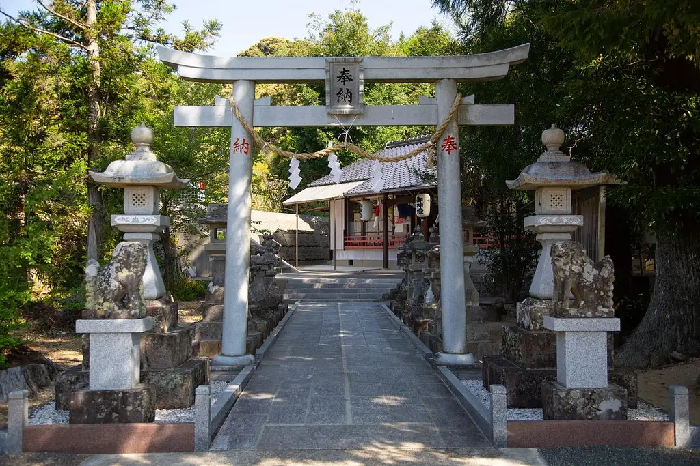
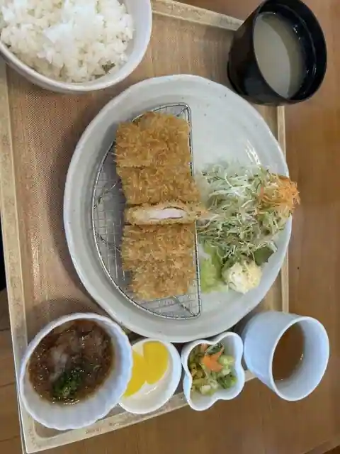

Japan / Mie / Mihamacho
Mihamacho · Mie
Mihamacho
Highlighted on the Mie map.

Mihamacho Town Hall

Sights · Things to do · Places to eat · Places to stay · Day-to-day services
Nearby in Mie: ← Meiwa · Minamiise →
Other towns: Asahicho · Iga · Inabe · Ise · Kameyama · Kawagoe · Kiho · Kihokucho · Kisosaki · Komono · Kumanoshi · Kuwana · Matsusaka · Meiwa · Minamiise · Nabari · Odai · Owase · Shima · Suzuka · Taiki · Taki · Tamaki · Toba · Toin · Tsu · Watarai · Yokkaichi
All towns in Mie · Back to all prefectures